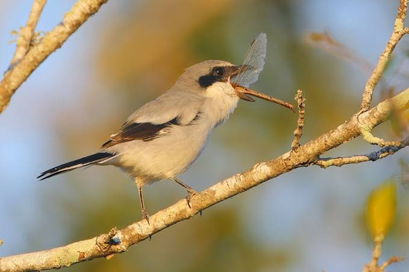

Shrike
Birds
Shrikes are carnivorous passerine birds of the family Laniidae. The family is composed of 33 species in four genera. The family name, and that of the largest genus, Lanius, is derived from the Latin word for "butcher", and some shrikes are also known as butcherbirds because of their feeding habits.
Family: Laniidae; Rafinesque, 1815
Scientific name: Laniidae
Kingdom: Animalia
Higher classification: Passerine
Phylum: Chordata
Mass: Great grey shrike: 64 g, Loggerhead shrike: 46 g
Shrike, (family Laniidae), any of approximately 30 species of medium-sized predatory birds (order Passeriformes); in particular, any of the more than 25 species of the genus Lanius, constituting the subfamily of true shrikes, Laniinae.
With their bills they can kill large insects, lizards, mice, and small birds. A shrike may impale its prey on a thorn, as on a meat hook; hence another name, butcherbird.
True shrikes, solitary birds with harsh calls, are gray or brownish, often with black or white markings. The most widespread species is the great gray shrike (L. excubitor), called northern shrike in Canada and the United States, a 24-cm (9.5-inch) black-masked bird.
The only other New World species is the similar but smaller loggerhead shrike (L. ludovicianus) of North America. Several Eurasian species have reddish or brown markings.
Bush-shrikes encompass nearly 50 species of African birds in the family Malaconotidae, a taxon that was once considered to be a subfamily within the family Laniidae.
Bush-shrikes are about 16 to 20 cm (6.5 to 8 inches) long. They have brighter plumage and less-raptorial bills than true shrikes, and they have long soft feathers on the rump.
They are insect eaters that forage furtively in bushes. All have bright whistling calls. The many-coloured bush-shrike (Chlorophoneus multicolor) is noted for polymorphic variation in the colour of its underparts—a shade of red or yellow but sometimes black or white.
The gorgeous, or four-coloured, bush-shrike (Telophorus quadricolor) is green above and golden below, with black-bordered red throat. Some authors equate the genus Chlorophoneus with Telophorus.
Bell-shrikes or bellbirds, members of the African genus Laniarius, also of the bush-shrike group, often have names imitative of the males’ notes: boubou and gonolek.
They are about 20 cm (8 inches) long, plain-coloured, often with a slash of white on the wings. All black forms include the sooty boubou (L. leucorhynchus). Black and white, with red-tinged underparts, is the tropical boubou (L. aethiopicus).
Black above and bright red below are the black-headed, or Abyssinian, gonolek (L. erythrogaster) and the Barbary shrike (L. barbarus).
Biology of Shrike
Distribution, migration, and habitat
Most shrike species have a Eurasian and African distribution, with just two breeding in North America (the loggerhead and great grey shrikes).
No members of this family occur in South America or Australia, although one species reaches New Guinea. The shrikes vary in the extent of their ranges, with some species such as the great grey shrike ranging across the Northern Hemisphere to the Newton's fiscal which is restricted to the island of São Tomé.
They inhabit open habitats, especially steppe and savannah. A few species of shrikes are forest dwellers, seldom occurring in open habitats. Some species breed in northern latitudes during the summer, then migrate to warmer climes for the winter.
Breeding
Shrikes are generally monogamous breeders, although polygyny has been recorded in some species. Co-operative breeding, where younger birds help their parents raise the next generation of young, has been recorded in both species in the genera Eurocephalus
and Corvinella, as well as one species of Lanius.
Males attract females to their territory with well-stocked caches, which may include inedible but brightly coloured items.
During courtship, the male performs a ritualised dance which includes actions that mimic the skewering of prey on thorns, and feeds the female. Shrikes make simple, cup-shaped nests from twigs and grasses, in bushes and the lower branches of trees.